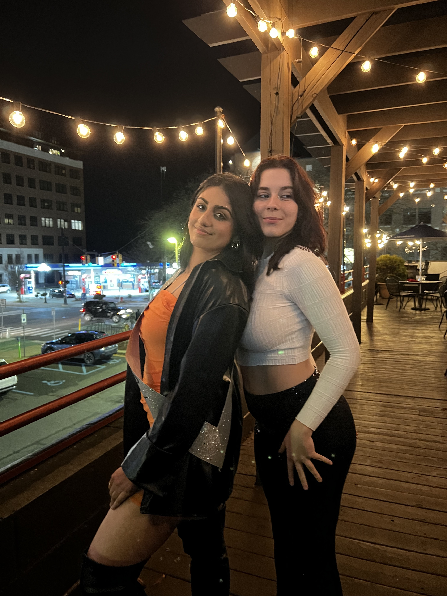

As a current
sophomore at UofM, I have fallen in love
with the field of UI/UX
Design & Research
in just one year.
I’m particularly
interested in studying
the psychology 

behind human
interactions with products. I’m based in Chicago but am
currently open to all product design
positions for the
summer of 2023.


Outside of UX, I have
a passion for photography,
psychological thrillers, and house music.


Resume and
transcript can also
be provided upon request.